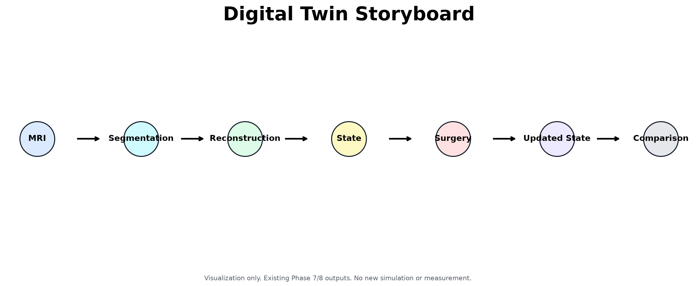
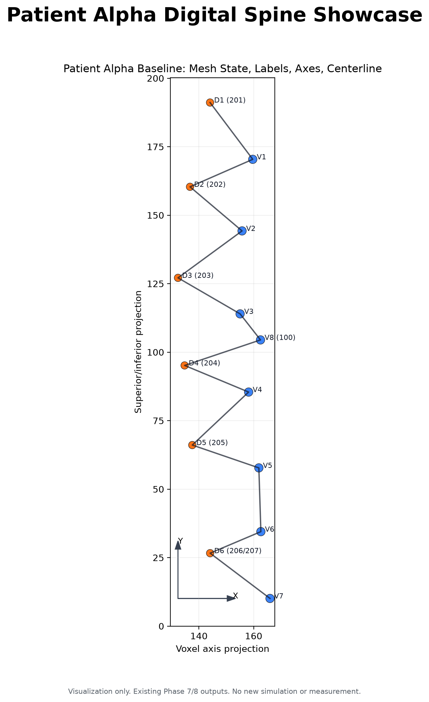

Phase 1 — MRI Browser
Streamlit DICOM viewer for RSNA lumbar spine MRI studies with study/series selection, slice browsing, degeneration labels, and L4–L5 annotation tools.
Try the browser demo →Research Prototype · V1.0
MRI → Segmentation → Reconstruction → State → Simulation
Streamlit DICOM viewer for RSNA lumbar spine MRI studies with study/series selection, slice browsing, degeneration labels, and L4–L5 annotation tools.
Try the browser demo →Reconstruction, measurements, patient state vectors, spine graph modeling, intervention simulation, and mesh-level transformation outputs.

Curated dashboards, architecture diagrams, and audit reports for open-source presentation and research communication.
